注意：本系列文章是 zcc 编译器 总结系列文章，本系列文章并不打算呈现所有的代码细节（主要是细节太多了，全部呈现既不现实文章也看着冗长而没有意义）。因为是总结性质的文章，所以更多是分享实现的过程中个人感兴趣的点
scanner
这里对应 zcc 中的
scan.c文件
无论怎么样，编译器最开始要进行的工作，就是对输入的代码文件进行扫描，这里核心的逻辑有 2 点
- 扫描时需要跳过不需要的字符
- 对每个扫描到的字符做一个状态的映射
1 的逻辑很简单，先预读取一个字符，如果这个字符是 ' '/ \t / \n / \r / \f 之类的字符就还是继续读取，而继续读取的核心就是调用 fgetc 这个函数，参数传的就是代码文件路径，这个逻辑是被写在 next 函数里面的
2 的逻辑也比较简单，先建立一个 Token 数据结构，如下
struct Token { |
其中 Token 成员 token 用来存储对扫描到的字符的一个 状态的映射，比如 EOF 对应 TOKEN_EOF，+ 对应 TOKEN_INCREASE 等等
那么，什么是 “状态的映射”?
其实这里用到的技术就是 有限状态机 了，例如，这里用一张图解释下 xxx += 1 这个语句，在解析时是怎么构造有限状态机的
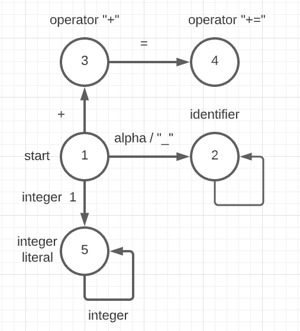
- start 状态: 状态 1
- identifier 状态: 在状态 1 时，如果当前扫描到的字符是个字母，就迁移到状态 2，如果继续扫描还是字母就保持在状态 2，如果不是就返回到状态 1
- operator “+” 状态: 在状态 1 时，如果当前扫描到的字符是 “+”，就迁移到状态 3
- operator “+=” 状态: 在状态 3 时，如果当前扫描到的字符时 “=”，就迁移到状态 4
- integer literal 状态: 在状态 1 时，如果当前扫描到的字符是个 数字，就迁移到状态 5，如果继续扫描还是数字就保持在状态 5，如果不是就返回到状态 1
编译器用到状态机是基操了，主要是明确各个语句/字符的目的，为后续的处理做一个整体的铺垫
而 integer_value 属于一个保留字段，可以用来存储数字的数值，也可以用来保存 switch case 语句中 case 的数量
现在有 Token 这个数据结构，2 的逻辑也就很明了了，就是将代码里的各种需要解析的特殊符号，将其与 enum 声明的 TOKEN_XX 对应起来，便于后续语句的处理
这里也有一个小的优化的点，scan.c 中有一个函数是 put_back，而 put_back 里面用到了一个全局变量 putback_buffer，用来保存字符。这个在 next 函数里的作用是减少调用 fgetc 的次数，如果 putback_buffer 里面已经存了一个字符的时候就直接返回 putback_buffer 里面的东西。
// scan.c |
那么什么时候应该用这个 put_back 函数呢?
一般情况而言，在扫描状态下，如果一个特殊字符后面可能跟着另一个特殊字符，比如 + 可能跟 +/= 变成 ++/+=，就需要用到 put_back，而 put_back 是跟 next 配合使用的。即扫描到字符 + 时，先提前调用 next 函数获取到下一个字符，如果不是 ++/+= 这种情况，那么调用 put_back 将这个字符放入到全局变量 putback_buffer 中。因为已经提前判断好情况了，所以下一次调用 next 时就直接返回 putback_buffer 里的字符就好了，也就没必要调用 fgetc 去读取文件的状态了
以上就是一个 scanner 的主要逻辑，当然里面还有更多的细节，比如
- 如何处理不同进制的数字?
- 如何处理
identifier也就是标识符? - 如何转义
\开头的字符?
等这里就不再细说了，很细的技术细节不再本文的讨论范围内，各位有兴趣的可以直接看对应 源码 scan.c
parser
这里对应 源码 parser.c
这里要说一点的是，目前来讲，用到的 parser 的核心算法，是类似于 precedence climbing 的一种广义的 Pratt parsing 算法，而它也是基于递归下降算法的，在了解这个算法之前，得先说明下 precedence climbing 算法是什么，以及它解决了什么问题
precedence climbing 算法属于 操作符优先级 算法，这个算法的核心在于，它将一个 表达式 看作一系列嵌套的 子表达式 的集合，如果 子表达式 里面有操作符，那么这个 子表达式 则具有与这个操作符相对应的优先级
比如如下的例子，假定例子中 +/*/^ 操作符的优先级分别为 1/2/3，优先级越高，那么这个 子表达式 越优先被执行
2 + 3 ^ 2 * 3 + 4 |
然而二元操作符是有结合性的，有 左结合 和 右结合
比如下面这种就是 左结合，在计算值的时候应该 从左往右 计算
2 + 3 + 4 === (2 + 3) + 4 |
而下面这种就是 右结合，在计算值的时候应该 从右往左 计算
2 ^ 3 ^ 4 = 2 ^ (3 ^ 4) |
这里再补充一点，朴素的 递归下降 算法有 2 个经典的问题，即
- 左递归
- 结合性 问题
左递归 问题是指，如果在 BNF 中，产生式的第一个元素是它自身，那么程序就会无限的递归下去，比如一个加法的 BNF 如下
additive_expression: |
additive_expression 里面套一个 additive_expression，这种 BNF 写法其实是有问题的，因为如果匹配不到 integer，它下一步就会去优先匹配 additive_expression，这也就是没有将语法规则定义好，按照这种规则进行递归解析自然会出现无限递归的情况。
那么如何解决所谓的左递归问题? 前面也说了，把 BNF 语法规则定义好 就 OK 了，比如 additive_expression 应该定义如下
additive_expression |
即 任何一个加法表达式要么是一个乘法表达式自身，要么是一个乘法表达式 加上/减去 另一个 加法表达式，注意上面 BNF 规则中 additive_expression 和 multiplicative_expression 的匹配顺序，都不是优先匹配自身 的，它们基本都 放在 “+-*/“ 操作符后面 去了，那么在匹配时就不会出现左递归问题了
但是这里仍然有一个问题，就是 结合性 的问题，比如在计算
2 + 3 + 4 |
时，它实际上是在计算
2 + (3 + 4) |
这下本来是一个 左结合 的操作符，但现在被当作 右结合 处理了，这是不对的，在一些复杂的计算表达式中会出现 bug
而为了解决这种 bug，有人提出了 precedence climbing 算法，这种算法的核心原理如下图
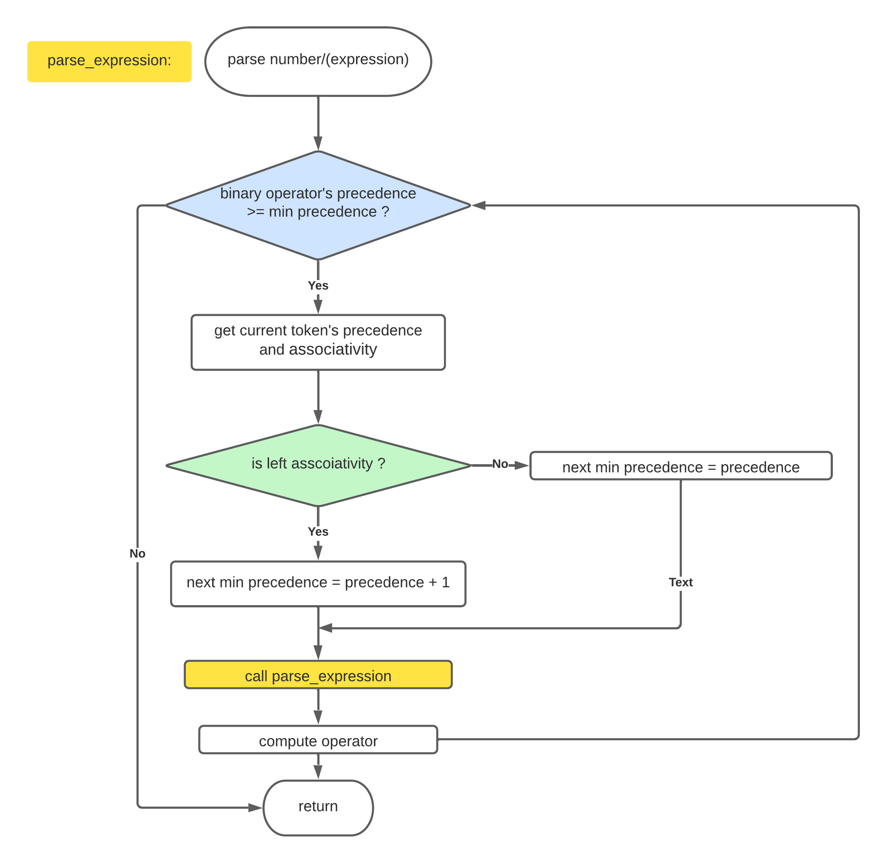
注意上图中 黄色 区域那边是一个
parse_expression递归，而 蓝色 区域则是一个while循环
使用上述算法，细心推测不难发现，假如把操作符的优先级和它是 左结合 或者是 右结合 特性定义好，那么就可以消除递归下降带来的 结合性 问题
这种算法真的是异常的优雅，代码的逻辑其实并不是很难懂，但是通过 操作符的优先级 就可以巧妙的解决左右结合这种 bug
说完了原理，再来说说 parser.c 中基于这个算法的实现细节
首先是定义操作符的优先级，值越大的优先级越高，值相等的优先级相等
static int operation_precedence_array[] = { |
然后还需要一个检查是否是右结合操作符的函数 check_right_associative
static int check_right_associative(int token) { |
注意上面通过
enum定义的TOKEN_XX是有顺序的，所以可以这么做右结合性操作符的判断
最后是一个确定操作符优先级的函数 operation_precedence
static int operation_precedence(int operation_in_token) { |
然后就是 parser.c 的核心函数 converse_token_2_ast，它的大致代码长这样
struct ASTNode *converse_token_2_ast(int previous_token_precedence) { |
是的， converse_token_2_ast 函数的主要作用就是解析语句并构建对应的 ast，如果解析到的是右结合性操作符，那么需要判定函数传入的上一个操作符的优先级跟当前的操作符优先级是否相等，这个其实跟上面说的 precedence climbing 算法的逻辑是一样的
以上，parser.c 的核心算法介绍完毕，也基本上是这个编译器的核心算法了，并不算很复杂。其实这个算法早在 Clang 中就有对应的应用，Clang 的 front-end 部分就是手写的递归下降算法，然后使用 precedence climbing 算法来更有效率地解析表达式
注意，其他 parser 相关算法如
RDparser、auto-generatedLL(k)parser、auto-generatedLRpasrser、TODP、shunting 等不在本文的讨论范围内。
Symbol Table
Symbol Table，也就是 符号表，这个玩意儿在本项目中是用来处理 变量名 的。注意这里提到的 变量名 是广义的，在代码文件中，每个 identifier、const 常量、function 函数名等都与之相关，而 Symbol Table 里面就存放着有关这些 变量名 的信息
Symbol Table 设计
struct SymbolTable { |
这里简单说一下 storage_class 和 structural_type 的作用。
storage_class在这里主要是用来定义变量或者函数的可见范围以及生命周期，在本编译器种，有如下的几种classenum {
STORAGE_CLASS_GLOBAL = 1, // 全局变量
STORAGE_CLASS_LOCAL, // 局部变量
STORAGE_CLASS_EXTERN, // extern 声明的变量
STORAGE_CLASS_STATIC, // static 声明的变量
STORAGE_CLASS_FUNCTION_PARAMETER, // 函数参数
STORAGE_CLASS_STRUCT, // struct 声明的变量
STORAGE_CLASS_UNION, // union 声明的变量
STORAGE_CLASS_MEMBER, // struct/union 里面的成员变量
STORAGE_CLASS_ENUM_TYPE, // enum 枚举的类型变量名，比如 enum `xxx {...};` 这个 `xxx` 就是类型变量名
STORAGE_CLASS_ENUM_VALUE, // enum 枚举的值，比如 `enum xxx {a, b};` 这个里面的 `a` 和 `b` 就是枚举值
STORAGE_CLASS_TYPEDEF // typedef 声明的变量
};structural_type在这里主要是用来确定要比较的两个类型是否等价，在本编译器中，它有如下的几种typeenum {
STRUCTURAL_VARIABLE, // 变量类型
STRUCTURAL_FUNCTION, // 函数类型
STRUCTURAL_ARRAY // 数组类型
};
最开始的设计，其实是一个这样的数组
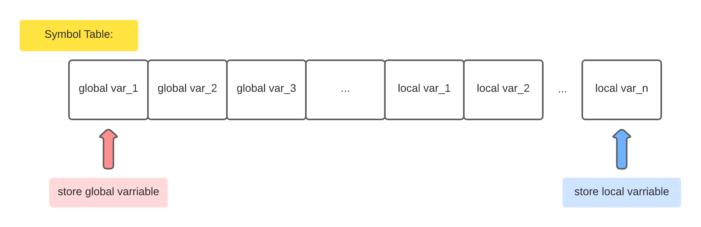
数组 index 低位 存 全局变量名，数组 index 高位 存 局部变量名，整个数组的大小最初设置为 1024，分别用一个全局的 global index (指向全局变量)以及一个全局的 local index (指向局部变量) 来对变量进行插入和查找的操作。
而对于函数来说，它的 symbol 信息分 2 种
- 函数自己的变量名
- 函数的参数名
要比较函数的 声明定义 和 调用，主要考虑 3 个问题，即
- 函数调用的名字是不是和声明定义的名字一致?
- 函数调用的 实参 是不是和声明定义的 形参 一致?
- 形参 在定义的函数体内被调用时，如何与局部变量区分开?
如果用数组来存储函数相关的 symbol 信息，那么
- 解决上述问题 1 和 2
在解析函数声明定义时，应该要把 函数名 + 函数 形参 存储到symbol table数组的global index区域，并将其分别标记为STORAGE_CLASS_GLOBAL+STRUCTURAL_FUNCTION(函数名) 和STORAGE_CLASS_FUNCTION_PARAMETER(函数 形参) - 解决上述问题 3
对于函数 形参 来说，它同时也要存储到symbol table数组的local index区域，并将其标记为STORAGE_CLASS_FUNCTION_PARAMETER，这样它才可以与local index区域里面其他的被标记为STORAGE_CLASS_LOCAL的局部变量区分开
但这样就会造成一个问题，即函数的 形参 需要从 symbol table 数组的 global index 区域 复制 到 local index 区域，这不仅会造成数组空间的浪费，同时也为开发编译器增加了心智负担：鬼知道这个 global index 区域与 local index 会不会发生重叠，万一各个函数的变量很多呢?
所以后面稍微做了下 重构，将有限空间的 symbol table 数组重构为一个 单向链表，其数据结构如下
struct SymbolTable { |
对于如下的代码
char var1; |
symbol table 链表表示如下
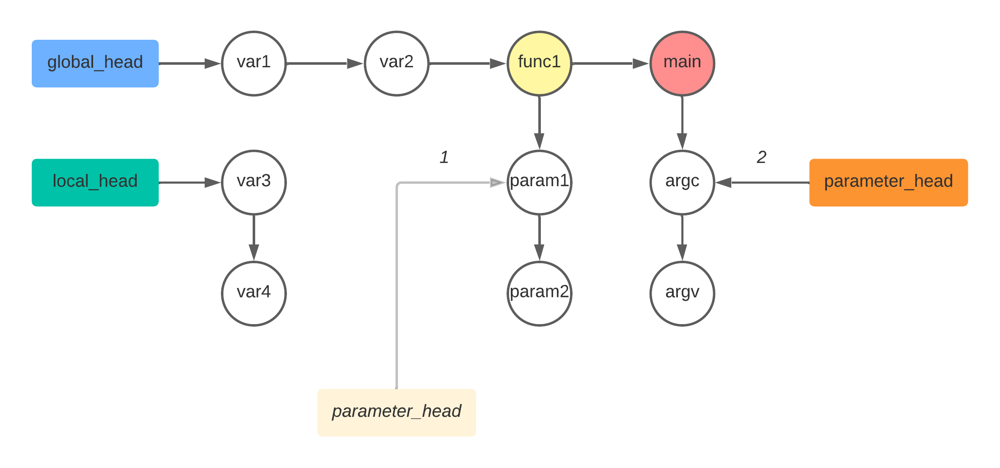
注意上图中，
global_head、local_head以及parameter_head均为全局指针。parameter_head这个全局指针有些特殊，它是优先指向先解析到的函数的 第一个参数
现在对于每个函数来说，它会有自己的一个链表节点，而它对应的参数也有一个链表，函数的指向其参数的指针 member 指向其参数链表。这样一来就能有效解决数组空间不够的问题
struct/union/enum/typedef
对于 struct、union、enum 以及 typedef 定义的变量来说，他们也是遵从 symbol table 链表这个设计的
但对于 struct 和 union，它们有个特殊情况，即 struct 里面可能会 嵌套 union/struct，这个时候就需要在 symbol table 中加入一个指针 composite_type 来指向这种嵌套的 复合类型
struct SymbolTable { |
比如如下的代码
struct foo { |
可以用链表表示为下图
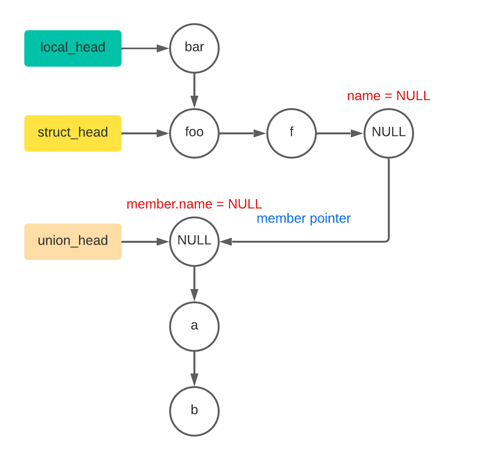
注意上图中，
NULL表达的意思不是这个节点为NULL，而是这个节点的name为NULL，因为在代码中union并没有这么表达:union xxx { int a, int b }，所以对于当前的 union 来讲它就是匿名的
而对于 enum 来讲，它的每个节点有 2 种类型: STORAGE_CLASS_ENUM_TYPE(父节点)和 STORAGE_CLASS_ENUM_VALUE(子节点)，如果解析到多个 enum，就按照解析的顺序将它们串起来
比如如下的代码
enum foo {a, b, c}; |
可以用链表表示为下图
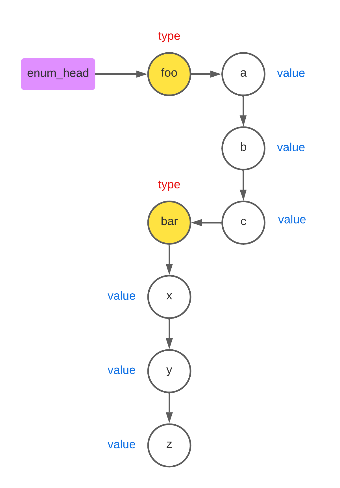
而对于 typedef 来讲，也是差不多的原理，比如如下的代码
typedef int FOO; |
可以用链表表示为下图
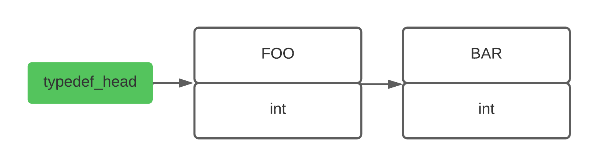
在解析到 BAR x; 时，会去 typedef 链表中查找 BAR 这个节点，如果找到了，那么这个节点的 primitive_type 就是 int，也就相当于找到 x 的类型
以上这部分的代码在 declaration.c 以及 symbol_table.c
类型检查和转换
下面说的内容对应源码 types.c
对于本编译器来讲，支持的类型并没有很多，只有简单的几种，如下
enum { |
在只有这么几种类型的情况下，如果出现指针该怎么解析呢? 这里用了一个取巧的办法
如果用到指针类型，那么只需要将其对应的 primitive_type + 1 就好。比如 char 解析后的类型值是 32，那么其对应的 char * 指针类型值就是 33
如果需要对指针类型取得它指向的值的类型，那么只需要将其对应的 primitive_type - 1 就好。比如 char *foo = "x";，变量 foo 的类型是 char *，那么 *foo 的类型值就是 char，也就是 32
这里对应的函数分别是 pointer_to 和 value_at
int pointer_to(int primitive_type) { |
接下来讲讲 zcc 编译器是如何做类型检查和转换的
隐式类型检查和转换
下面说的内容对应源码 types.c 中的 modify_type 函数
类型检查，基本思路就是检查 左值 和 右值 的类型是否相等，如果不相等就做兼容/转换的处理
对于解析 if (x && y) 或者 if (x || y) 这种情况
注意其中的 ，
x是作为左值存在的，而y是作为右值存在的。
- 如果
x本来被声明为void x，那么这个左值应该与任何右值都不兼容 - 如果
x的类型是char *，右值y的类型是char，那么这两个值都应该不兼容
最好是要么 x 和 y 都是 char/int/long 类型的，要么它们都是 char */int */long* 型的
而对于不是 if (x && y) 或者 if (x || y) 这种情况，也就是 x = y 这种情况，那么需要有如下的判断
x和y都是char/int/long类型- 如果是
char x和char y这种情况，正常通过 - 如果是
char x和int y这种情况，不正常，需要报错 如果是
int x和char y这种情况，虽然不正常，但需要做转换，转换的方式就是将char y转换成int y，最后赋值给int x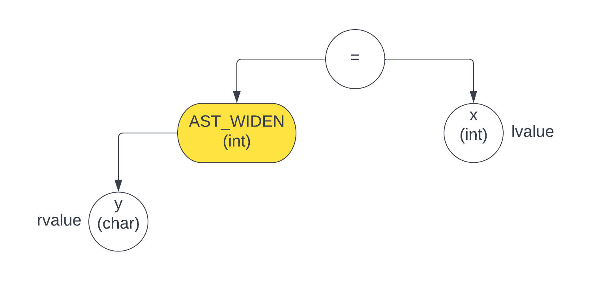
注意这个 ast 图中的
lvalue和rvalue的左右顺序颠倒了，主要是方便后面 back-end 生成汇编代码时(back-end 是对 ast 进行 后序遍历 生成汇编代码)，能确保rvalue在lvalue之前生成，因为操作顺序应该是:
- 先将
y的值 load 进某个寄存器 - 然后将存储
y的值的寄存器里面的值取出来，放入x所在的寄存器的位置
- 如果是
x和y都是char */int */long *类型- 如果是
char *x和char *y这种情况，正常通过 如果是
(void *) x这种情况，也正常通过指针之间相互传的是地址，对于本编译器来说，地址的大小都是固定的，所以暂不考虑
char *和long *之间相互传地址中的兼容问题
- 如果是
还有一种情况跟指针相关，比如 int *y 和 char x，当它们在执行 y + x、y - x、y += x、y -=x，即指针的加减操作时，需要做类型的 “转换”
这种情况的 ast 如下图所示
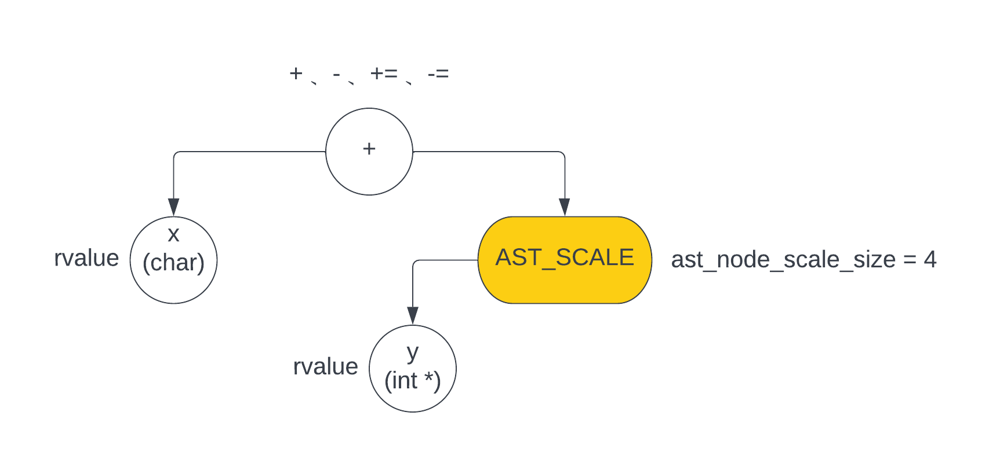
注意上图中，
x和y均为rvalue，也就是都是右值
为什么指针也需要?
- 假设是
char *y和char x的加减操作，那么对于y来讲，它需要加减的是 1 个x单位 - 假设是
int *y和char x的加减操作，那么对于y来讲，它需要加减的是 4 个x单位 - 假设是
long *y和char x的加减操作，那么对于y来讲，它需要加减的是 8 个x单位
可以看到里面单位相当于是一个 2^n 倍的关系，这个在汇编里可以用算术左移来实现这个关系
在汇编里面的操作顺序是
- 将
x的值 load 进某个寄存器 - 然后将
y的值也就是地址 load 进某个寄存器 - 在执行
+操作时，发现y是int *类型的，需要将x的值从其对应寄存器里面取出，并进行 算术左移操作，算术左移 2 位后，再对指针y进行+操作
至于为什么一定要是 1/4/8 这种关系，是因为我们定义 char 是 1 个 byte 的空间，而 int 是 4 个 byte 的空间，对于 long 则是 8 个 byte 的空间
所以主要是依据这个来跟 char *、int *、long * 指针的 寻址范围做一个区分，那么也就自然能够区分这几个指针了。如果不做区分，不同的指针在寻址时会出现重叠的问题，那么编译出来的程序自然也会有 bug
显式类型检查和转换
下面说的内容对应源码中的 declaration.c 中的 convert_literal_token_2_integer_value 函数以及 convert_type_casting_token_2_primitive_type 函数
首先我想举出几个例子，碰到哪些语句类型检查可以过呢?
// 1. |
上面 3 条语句均可以通过
- 对于
char *str = " ";来说，=左边的类型是char *，=右边是一个AST_STRING_LITERAL类型的字符串，类型检查通过 对于
char *str = (void *)0;来说，这是一个显式的转换，=左边的类型是char *，=右边是一个(void *)0也就是NULL，所以通过注意它所形成的 ast 如下图所示
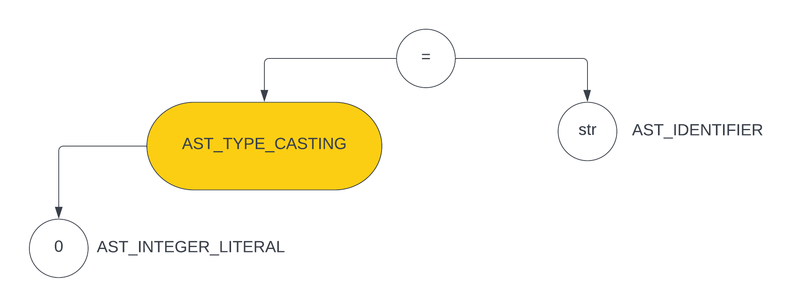
那么如何判定这个节点是否是
(void *)0呢，只需要知道这个节点的左子节点的类型是否是AST_INTEGER_LITERAL并且当前节点值为 0 即可- 对于
int str = 255;来说，=左边的类型是int，=右边的类型是一个char，因为一个int str放得下一个(char)255，所以通过
那么反过来，碰到哪些语句类型检查不可以通过呢?
// 1. |
上面两条语句均不可以通过
- 对于
char str = 3000;来说，=左边的类型是char，=右边的类型是int，因为一个char str放不下一个(int)3000，所以不通过 - 对于
char *str = 54;来说，=左边的类型是char *，=右边的类型是char，并且54的类型虽然是AST_INTEGER_LITERAL，可是它的值不为 0，它不是类似于(void *)0那样的强制转换，所以不通过
然后，若需要强制转换，那么该怎么做呢?
其实很简单，比如要解析如下的语句
char *str = (void *)0; |
得先提取出 = 右边括号中的 void，再提取出 *，结合形成 void * 获得当前的类型，拿到这个结果后再返回给 char *str，此时在构建 ast 时，str 的类型就不再是 char * 而是 void * 了
Dangling Else 问题
下面说的内容对应源码中 statement.c 中的 parse_if_statement 函数
Dangling Else 问题是指，如果一个 if-else 语句中，存在嵌套的 if-else 语句，如果 parser 根据其 BNF 解析时，能产生多个 ast，那么我们有理由认为这个语法是有歧义的
比如，对于 c 来说，它的一部分 BNF 如下
statement = ... |
那可以根据上面的 BNF 规则可以写出如下的代码
if (a) if (b) s; else s2; |
但 parser 不这么想，因为这既可以被解析成
if (a) { |
也可以被解析成
if (a) { |
那么应该选取哪个呢? 在 c 里面选的是就近原则，即 else 应该与离它最近的一个 if 匹配。而对于我们的 zcc 编译器，也是如此
那么在 zcc 里面是如何实现这种就近原则呢?
首先看关键代码
// statement.c |
那么 parse_single_statement 做了什么事情?
// statement.c |
很明显，这是一个递归。即如果在解析 if statement 时，只要遇到一个 else 关键字，就直接进行 递归 处理，并生成这个 else 的 ast。else 的 ast 作为一个 false_node，与其最近的 if 解析成的 true_node 组成 ast 的 middle 和 right 节点，而 left 节点就是最近的 if 括号中的语句，这个语句被解析成 condition_node
比如上面提到的代码
if (a) if (b) s; else s2; |
会被解析成如下的 ast
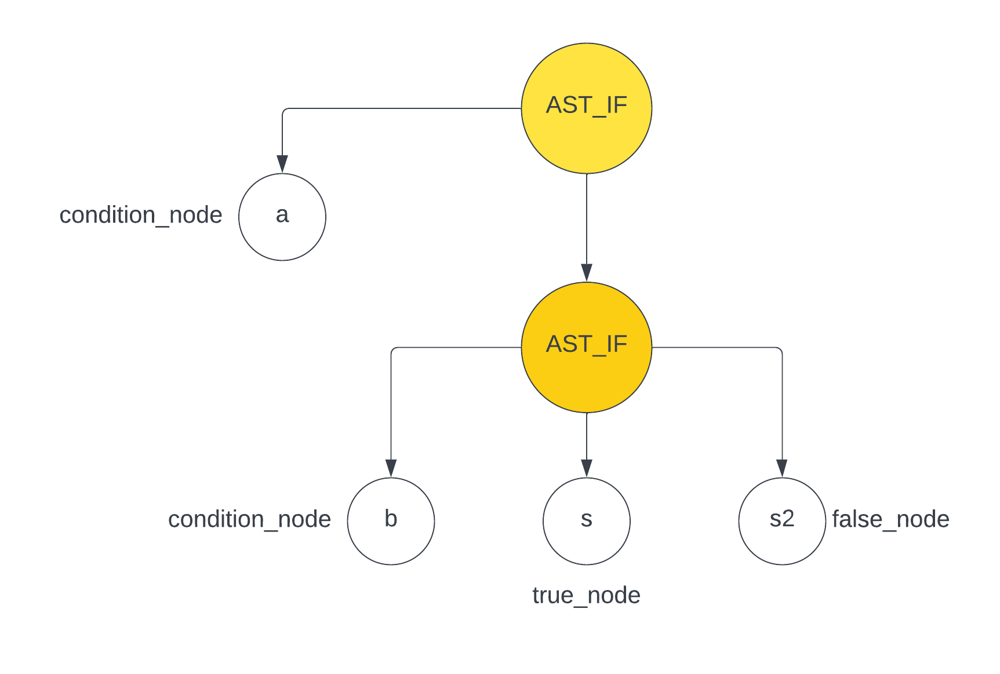
可以看到 ast 中最下面的 AST_IF 节点包含了 s 和 s2 节点，那么在后序遍历生成汇编代码时，解析这个 ast 就贯彻了 if else 就近匹配 的原则
while/for/switch case statement 的解析
AST_GLUE
为什么需要一个 AST_GLUE 这种类型的节点? 因为在解析代码语句时，会解析成各种各样的 statement，比如 if statement、while statement、for statement、switch case statement 等等，这样一个 AST_GLUE 类型的节点的作用是把它们 “粘连” 起来
比如下图
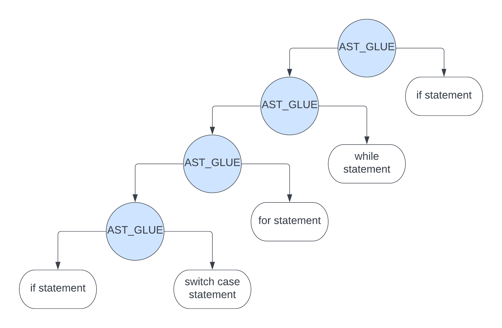
对应于代码 parse_compound_statement
struct ASTNode *parse_compound_statement(int in_switch_statement) { |
parse_single_statement 就是对类似于 if / while / for / switch case 等 statement 语句的处理(主要是将其转换成 ast)
while statement
上面说到了 if statement 的解析，相对于 if，while 则好解析得多
// statement.c |
parse_single_statement 里面也是跟解析 if statement 一样的递归
// statement.c |
对于 while statement 来说，它的 ast 总体如下
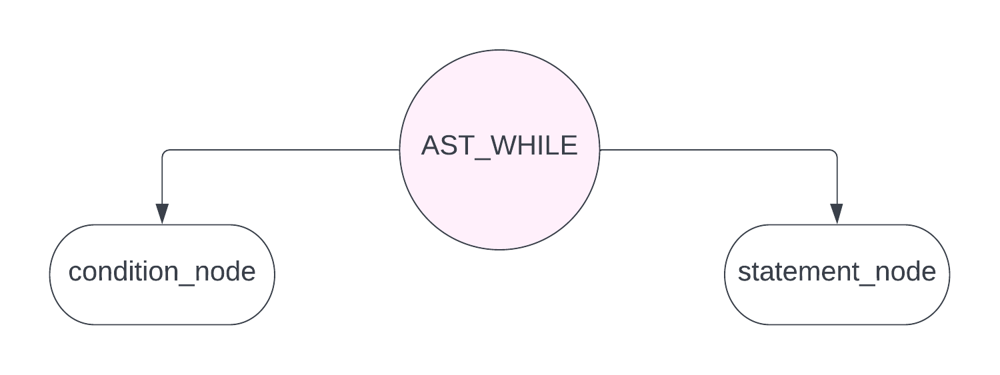
没有 middle 节点，这个节点为 NULL
for statement
对于解析 for statement 来说，就需要 AST_GLUE 节点了，因为 for statement 就是 while statement 的变种，比如
for (i = 1; i < 10 ; i = i + 1) { |
这段代码，可以看作是
i = 1 |
那么它构成的 ast 则可以表示为下图
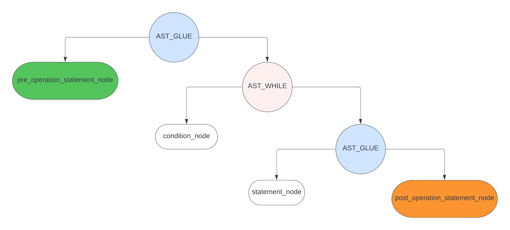
对应代码 parse_for_statement
// statement.c |
parse_single_statement 中也一样对 for statement 进行了递归处理
// statement.c |
那么代码中 pre_operation_statement_node 和 post_operation_statement_node 代表什么呢? 它们代表要解析的代码
for (i = 1; i < 10 ; i = i + 1) { |
中出现的 i = 1; 和 i = i + 1;，它们通过调用 parse_expression_list 函数 分别生成如下的 ast
i = 1;
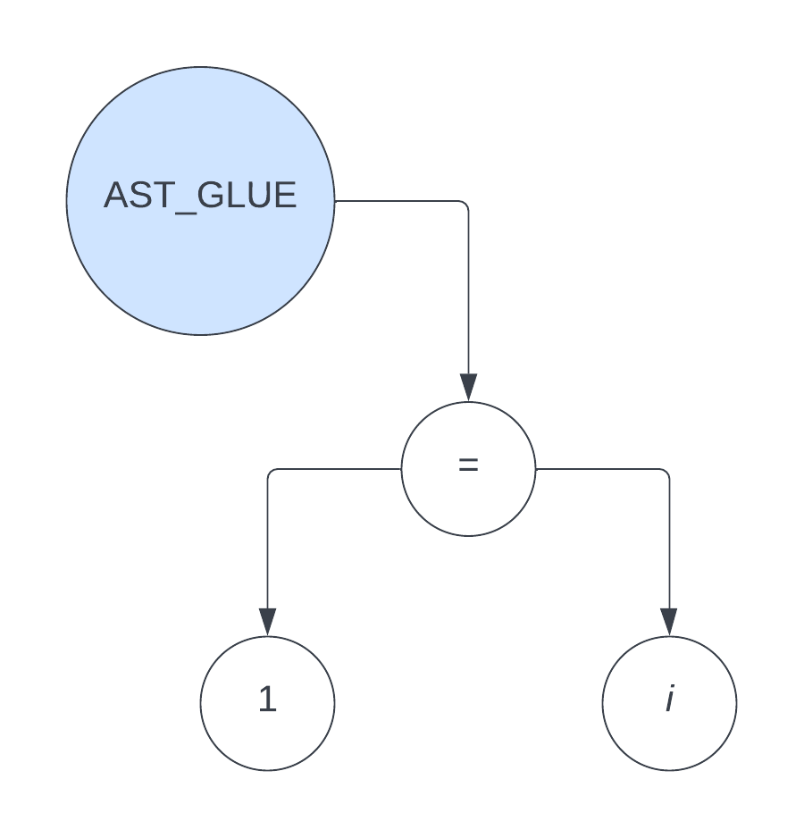i = i + 1;
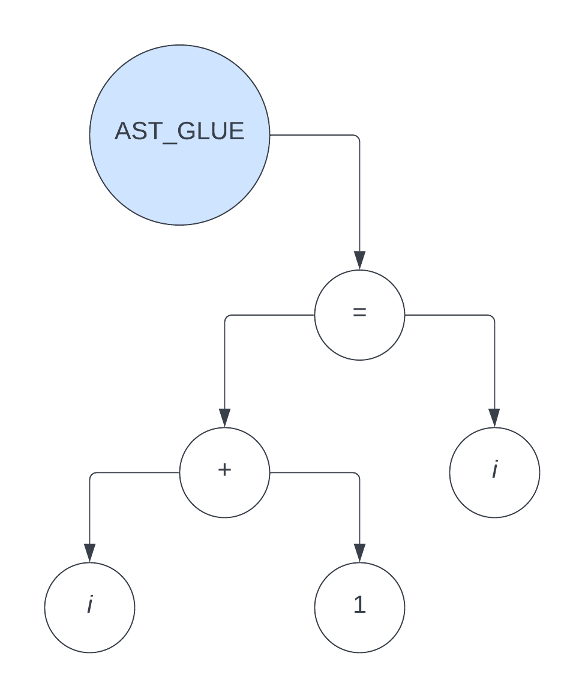
if/while/for 中没有操作符的条件语句问题
前面讲完了 if / while / for 是怎么解析生成其对应的 ast 的，但这个里面并没有说到类似于 if (a) / while(a) / for(; a ;) 这种条件语句，要是这里面没有 > / < / == 等这种情况下，如何判断 a 的 true or false?
碰到这种情况，解决的方法也很简单，在 contidion_node 的基础上加一个 AST_TO_BE_BOOLEAN 节点，即把 a 变成
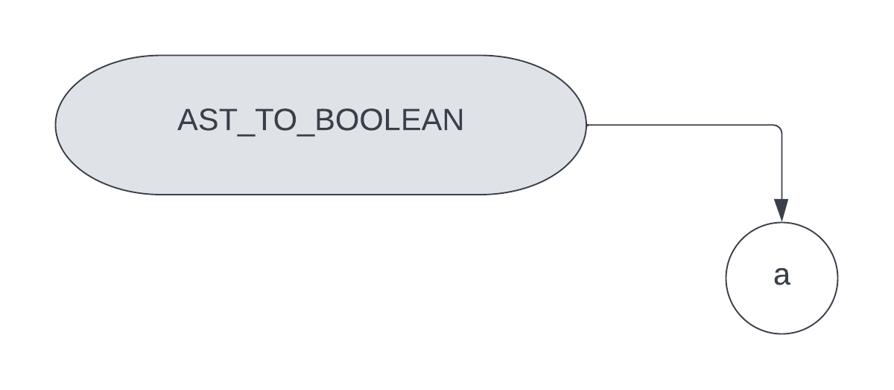
后续在 back-end 阶段再针对这个 AST_TO_BE_BOOLEAN 做处理就可以了
switch case statement
下面要说的内容基于代码 parse_switch_statement
对于 switch case 这样的 statement 语句来讲，要构建的 ast 类似于下图
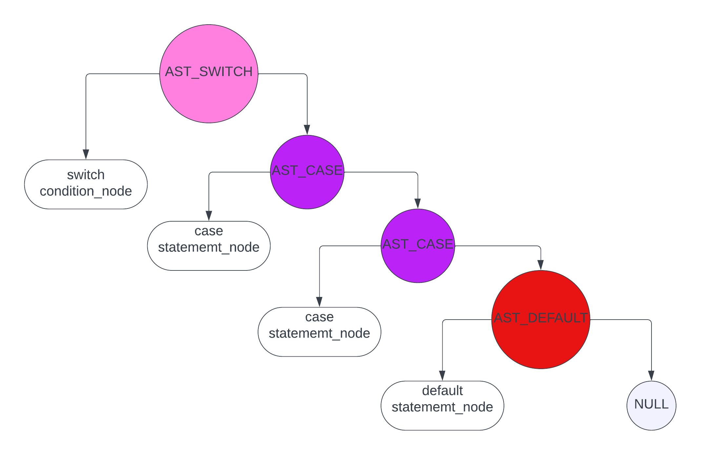
在实现的过程中主要需要考虑几点
- 如果是
switch(xxx) {}这种情况，需要立刻停止解析 - 需要检查
default之后是否还有case或者default - 对于
case 1:这个语句来讲，这个1必须是AST_INTEGER_LITERAL的类型 - 不允许有重复的
case，比如case 1:后面又跟了一个case 1:之类
注意以上几点之后，解析的逻辑也就很简单了，基本上是按照 switch case statement 的代码顺序，先生成一个 switch 的头节点，再根据代码的书写将 case 和 default 节点生成出来并按照上图中 ast 那样的结构进行拼接，最终生成一个完整的 swith case 的 ast
这边就不再过多的描述代码细节了，因为逻辑比较简单
break/continue 问题
对于 break 和 continue 来说，下面的代码是不成立的
比如
int main() { |
或者
int main() { |
因为它们都没有进入 while 和 for statement 里的循环，那么如何解决这种情况呢? 很简单，加一个全局的 loop_level 变量，这个变量是用来标记要解析的 while 和 for statement 里面嵌套的层数。如果 loop_level 是 0，说明一层循环也没有进去，如果这时候解析到了 break/continue，就应该报错
那么代码就是这么写
// statement.c |
所以每次都要在解析 while 和 for statement 语句中更新对应的 loop_level
// statement.c |
注意到这里用到了 回溯，因为不可能在解析完一个 while 或者 for statement 之后，loop_level 还一直增长，应该是进入一个循环时就增加，出来一个循环时就减少，这样才方便判断解析到对应位置时究竟嵌套了多少层，那么也就知道这个位置适不适合放一个 break/continue
而说到 switch case 这个语句，它里面的 break 同样只能存在于 switch case 中，至少要被一个 switch case 包裹住，道理跟之前说的一样，这里同样的加入一个全局变量 switch_level 来做标记
static struct ASTNode *parse_switch_statement() { |
而对于 break 语句而言，它的报错条件又多了一个，即 switch_level 不能为 0
// statement.c |
那么什么时候应该将 loop_level 和 switch_level 初始化为 0 呢? 我们知道无论是 while/for/switch case statement 语句，它们最终都是要被 函数 所包裹起来的。在进入这个函数之前，应该要将它们初始化为 0。在走出这个函数之后，如果遇到新的函数，那么也应该将它初始化为 0，所以就对应于代码
declaration.c 中的 parse_function_declaration 函数
struct SymbolTable *parse_function_declaration( |
以上基本就解决了 break/continue 中会出现的问题
前缀/后缀操作符的处理
所谓的 前缀 操作符，就是 &/*/-/~/!/++/-- 这样的操作符在一个变量之前的情况，比如 ++y、*y 等，而 后缀 操作符就是相反的情况(除了 &/*/-/~/!)，比如 y++、y--，但还有 2 个特殊情况，比如
- 解析到
y[时，则看作是在解析数组，这个时候它要去访问数组里面的某个元素 - 解析到
y.或者y->时，则看作是在解析struct/union，这个时候它要去访问struct/union里的某个成员变量
由于前缀操作符是在变量的前面，所以前缀操作符是优先被扫描的，那么 前缀操作符的优先级是大于后缀操作符 的。如果在扫描时，匹配不到 &/*/-/~/!/++/-- 这些符号，构建不了前缀操作符的 ast，那么就应该退而求其次，构建后缀操作符的 ast
对于解析有前缀操作符的表达式来说，可以 递归 地构建 ast，因为可能一个变量前面可能有多种前缀操作符的组合; 而对于解析有后缀操作符的表达式来说，可以 循环 地构建 ast，因为目前来讲除了解析数组和 struct/union 里面的 元素/成员 之外，就只剩下 ++ 和 --(目前语法还不考虑连续 ++ 和 -- 的情况)
数组元素中的偏移
对于 int b[25]; 数组以及数组下标 b[3] 中的 3 来说，需要将这个 char 类型的 3 转变成 int 类型的 3(在本编译器中，所有的 integer literal 都默认是 char 类型)，也就是说，每当数组做访问时，比如访问 b[3]，在编译器看来是访问到了 b[3 * 4] 这个位置，即访问的单位不是 1 而是 4 了，而这个 3 * 4 所代表的，就是基于数组 基地址 的 偏移
对于
b[3] = 12; |
这样的语句，它生成的 ast 如下图
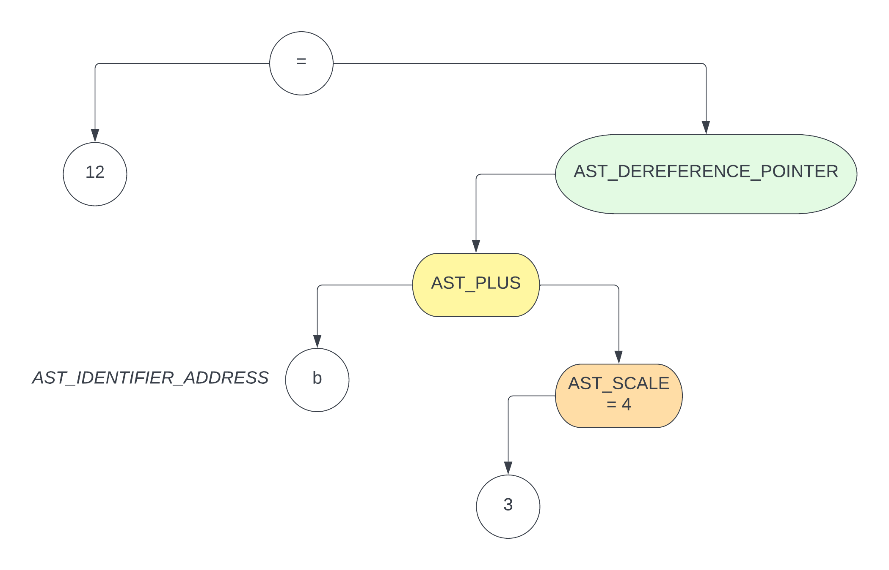
在生成汇编时，b 节点，也就是 AST_IDENTIFIER_ADDRESS 节点，存储了这个数组的 基地址 信息，在经过 AST_PLUS 节点，会将这个 基地址 和已经 scale 成 4 倍的 3 加起来，就得到了真正的 b[3] 所在的地址。最后再经过 AST_DEREFERENCE_POINTER 节点，拿到这个 b[3] 所在的地址的寄存器的位置，将 12 load 进这个寄存器，即完成了赋值的操作
注意之所以
b[3]能被赋值，是因为此时的b[3]默认是一个 左值，如果需要它变成一个 右值，那么只需要在解析类似于a = b[3];这种情况时，将其置为 右值 即可
那么对于语句
int a; |
其对应的 ast 如下图
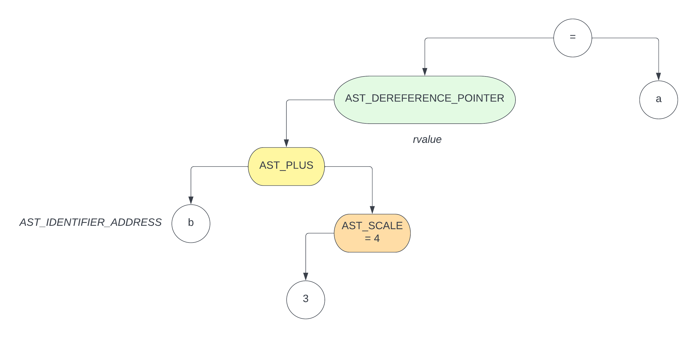
那么在汇编里面的表现就是，将 b[3] 所在的地址的寄存器的位置里面的值，move 到 a 所在的寄存器里面去
这里顺便说一句，对于指针来讲，处理解引用的过程和数组的操作类似，因为在 C 中，数组本身就可以看作是一个指针，这里就不再过多赘述了
struct/union 成员变量中的偏移
struct/union 变量里面的成员变量也存在 偏移，比如
struct fred { |
看上去 x 是占 4 个字节，而 y 是占 1 个字节，z 是占 8 个字节
但实际上这个 fred 占几个字节呢?
是 16，即 4 + 4 + 8
这里涉及到一个 内存对齐 问题，不过后面在讲 back-end 的工作时会详细地说到 这个算法，这里简单说下，其实就是在解析 struct fred 时，对它里面的 member 成员的类型以及它的类型大小做一个判断，对其内存做一个简单的 向上对齐，char y 要对齐 int x，所以 char y 的位置占有 4 个字节
那么
- 在访问
fredstruct 里面的x时，需要跨越0个单位，因为x所在的位置是 基地址 - 在访问
fredstruct 里面的y时，需要跨越4个单位，因为要跨越的x是int是4个字节 - 在访问
fredstruct 里面的z时，需要跨越8个单位，因为要跨越的y虽然是char，但它实际上内存是向上对齐的，即向int x对齐，是4 + 4
对于下面的代码
struct fred var2; |
其生成的 ast 分别为
var2.x = 12;
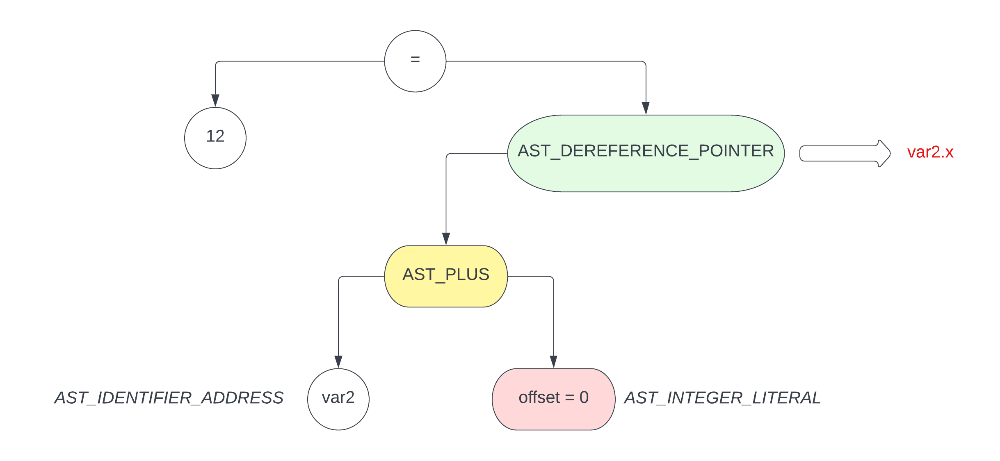
var2.y = 'c';
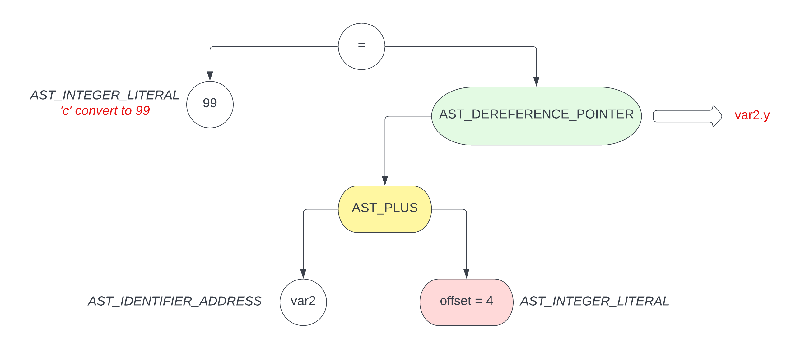
var2.z = 4095;
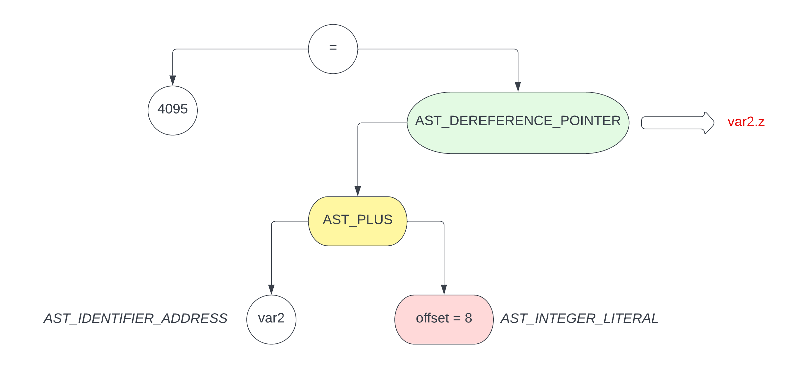
通过上面 3 个图，可以很直观地看到 offset 偏移量在访问不同的 struct/union member 成员变量时是如何变化的
而根据 ast 寻找 struct/union 的过程跟数组那个是差不多的，区别只是计算 offset 的方式不同
- 数组是通过数组变量声明的类型进行
scale来计算 struct/union是通过其成员变量的类型进行 内存对齐 来计算
注意，对于
union类型来说，其offset都是0，这个就不再赘述了
peek scan
这里的 peek 指的是 提前 scan 一些字符，以便于一些情况的判断，比如
- 解析类似于
int xxx(void) {}这种函数与int xxx(int a, int b) {}之间的区分，也就是扫描函数参数 - 解析类似于
char *a = "hello" "world";这种连续的字符串的赋值时
这 2 种情况下，由于 scan.c 之前用的是一个全局的指针变量 token_from_file，再次调用 scan 函数时，token_from_file 里面的 token 会变化，会影响后续的 scan 工作，所以这里另外用了一个全局的指针变量 look_ahead_token，用这个来替代就不会有问题，即在需要 peek 字符串时调用 scan 函数，但参数传的是 look_ahead_token
那么，代价是什么呢? 当然是需要对 scan.c 中的 scan 函数做适当修改，其实也很简单
// scan.c |
相当于是这里用 look_ahead_token 做了一个 “拦截”
如何解析函数的递归调用
如果是有函数递归调用，怎么解析呢?
这个其实非常简单，甚至是不需要考虑的问题，因为函数本身就是由一些复合语句组成，而复合语句中可能会存在函数调用，只要解决了 函数声明和定义 以及 函数调用 的问题，那么这个问题也就相当于解决了。注意，编译器主要是对代码的 翻译，不会出现解析一段递归的代码而递归地去生成 ast。那么什么时候去执行这段需要进行递归处理的 ast 呢? 那自然是 back-end 的工作了
对于函数声明和定义来说，它大体上需要建立如下的 ast
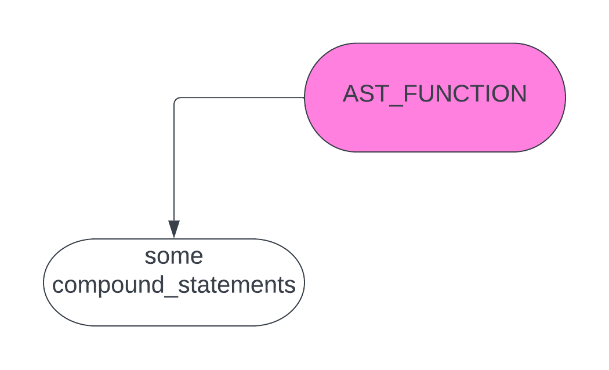
而对于解析函数的递归调用，比如经典的斐波那契代码
|
其中 fib 函数会被解析为如下的 ast
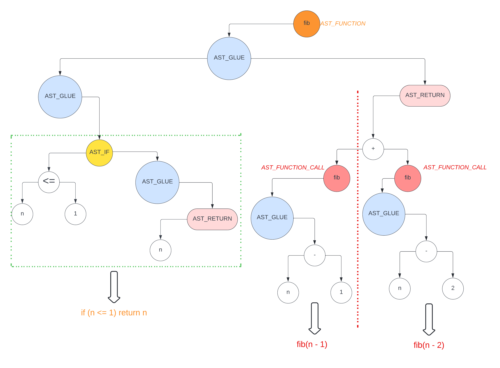
从上图可以看出，只要遵循后序遍历，在生成汇编代码的时候即可以生成对应的递归代码，相当于最后是用汇编实现了一遍这个递归代码
这里还需要注意的是，对于函数调用来说，比如 func_name(param1, param2, param3, param4);，它的参数有可能是一个值，也可能是一个表达式，所以对于这种 AST_FUNCTION_CALL 的节点来说，要构建如下的 ast
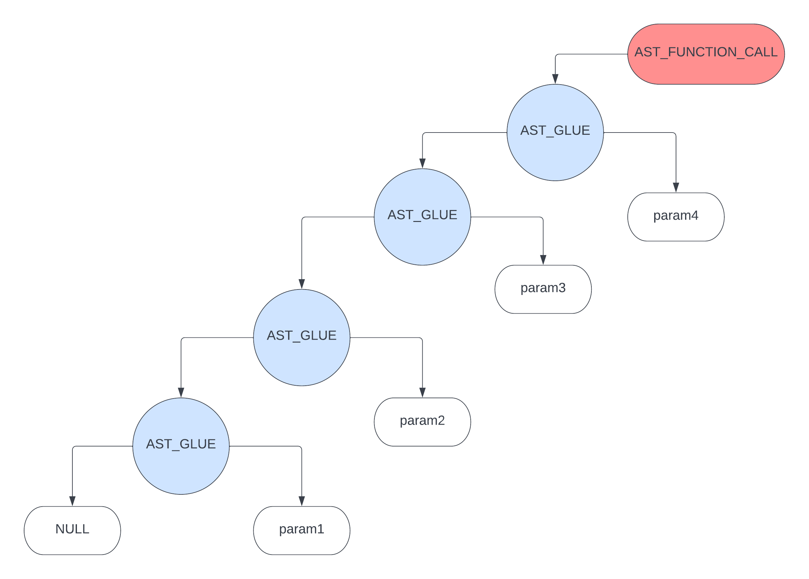
对于这个 ast 来讲，就有必要 从右往左 做一个循环遍历，那么这么遍历的结果就是 param4 > param3 > param2 > param1，这样做的目的主要是为了后面生成汇编代码时，保证这些参数的 入栈顺序 正确
如何解析头文件
以下要说的内容基于 scan.c 下的 next 函数
引入的头文件，一般会经过 gcc 编译器的 预处理，比如
这个引入的 stdio.h，大概会被 预处理器 解析成下面这样
# 1 "z.c" |
这里只需要关注以 # 开头的语句，比如 # 1 "include/stdio.h" 1，# 1 表示当前解析的 include/stdio.h 这个文件解析到第 1 行了，最后面那个 1 不需要管他
那么基本上逻辑就是，对以 # 开头的语句，每一行进行逐行扫描，获取到它当前的解析到的第几行的位置，以及当前解析的文件路径
那么拿到这两个有什么用呢? 主要是为了方便做后续的错误报错提示，解析到第几行，哪个文件报错是编译器需要提示给用户看的
同时，这里也是起到了对以 # 这种开头的语句的 过滤 作用，代码细节就不详细讲了，因为逻辑很简单，大家有兴趣的可以直接看源码
总结
scanner就是做分词的作用，主要逻辑就是将一些看上去能分开的词拆解成一些能用的上的 token 的这么一个流程parser用到了一个巧妙的优先级算法实现操作符的左右结合性的问题，而对于左递归问题，需要把 BNF 定义好- 类型检查和转换分隐式和显示，这个是整个编译器中比较绕的部分，但基本上也是根据左值右值的类型做判断和取舍，并最终生成 ast 的这么一个流程
- Dangling Else 问题其实在解析时取一个就近原则就可以解决
- 对于不同的 statement 语句，需要从整体上将它们抽离出来，并用一个
AST_GLUE节点将它们粘连起来 break/continue问题的解决方案之一就是看嵌套的深度- 由于有类型检查和转换，所以对于不同类型的数组和不同类型的
struct/union成员变量，就需要有对应的偏移量的处理 - 函数的递归调用问题其实已经在解析函数声明定义和调用这方面解决掉了
- 引入
gcc预处理后，就可以引入头文件了，但是也要对这个被预处理器解析后的头文件进行处理才可以走正常的 parser 过程
可以看到，在 front-end 端需要注意的细节有很多，但主要就是以上这些，其他的一些细节没有细讲是觉得没有必要。
在本篇的内容中，充斥的解释的图最多的还是 ast，由此可见在写 front-end parser 的过程中，通过 BNF 构建 ast 非常重要。不借助 BNF 工具写确实非常繁琐，但是同时也能最大程度的帮助理解这些工具的一些原理性的东西，以后用工具的时候就不会摸不着头脑了
以上